Student CubeSat Challenge
Around 1,500 students designed and launched 100 femto-satellites on a single high-altitude balloon from Rameswaram — a first of its kind in the world, praised by the Prime Minister.
Est. 2015 · House of Kalam · Rameswaram
A decade of measurable impact in STEM education, skilling and the environment — a credible, Schedule VII–aligned partner for your CSR.
“Science is a beautiful gift to humanity; we should not distort it.” Dr. A.P.J. Abdul Kalam
Who we are
The Dr. A.P.J. Abdul Kalam International Foundation was established on 11 October 2015 at the House of Kalam in Rameswaram — by the family and close colleagues of Bharat Ratna Dr. A.P.J. Abdul Kalam, India's beloved scientist and eleventh President.
Our work grows from a single conviction he lived by: that an ignited young mind is the most powerful resource on earth. We take science, space and opportunity to schoolchildren — with a deliberate focus on government schools and underserved communities — so that a student in a coastal village can dream of building a satellite, and then actually build one.
A decade on, that mission has grown from Rameswaram classrooms to record-setting student space missions, a one-crore tree movement, and conferences that carry Dr. Kalam's message from New Delhi and the Gulf to the United Nations.
Impact
A decade of outcomes your CSR investment can build on — verifiable, and mapped to Schedule VII and the UN Sustainable Development Goals.
Our programmes sit squarely within CSR-eligible activities under the Companies Act, 2013.
Every rupee advances measurable progress against the Sustainable Development Goals.
// Figures compiled from Foundation records and public reports. Detailed, project-wise impact data and utilisation reports are available to partners on request.
Our purpose
A developed India powered by young people who dream boldly, think scientifically, and serve society — realising Dr. Kalam's Vision 2020.
What you can fund
Proven, ready-to-scale initiatives — each one a discrete, reportable CSR project that puts a young person at the centre.
Around 1,500 students designed and launched 100 femto-satellites on a single high-altitude balloon from Rameswaram — a first of its kind in the world, praised by the Prime Minister.
Over 5,000 students, including 2,000 from 100+ government schools, built 150 PICO satellites flown on India's first student hybrid rocket from Chengalpattu, Tamil Nadu.
A one-crore tree-plantation movement toward a greener India — with 10,000 saplings already planted at Olakkuda village, Rameswaram, alongside the TN Coastal Security Group.
STEM and innovation hubs set up inside schools across several states, running science, art and knowledge competitions with certificates families are proud to display.
Career skilling for UG/PG students in IT, AI and Data Science, plus Dr. Kalam Student's Home Libraries that put books and curiosity within every child's reach.
A planned Dr. APJ Abdul Kalam International School at Rameswaram, alongside sponsorship of underprivileged students and women-empowerment programmes.
CSR partnership
A credible, compliant implementing partner with a decade-long track record — ready to turn your CSR spend into measurable outcomes for young India.
Ten years of delivery — from world-record student space missions to a one-crore tree movement — recognised by ISRO, DRDO and national leaders.
Clear outputs and outcomes, project-wise accounting, utilisation certificates and periodic impact reports for every rupee.
Programmes designed to sit within CSR-eligible activities and to advance the UN Sustainable Development Goals.
Our credentials
Ways to partner
Fund a defined programme end-to-end, with agreed milestones and reporting.
Scale an initiative across schools, districts or states over 2–3 years.
Involve your teams as mentors and volunteers in STEM and green drives.
Back a student satellite mission, a conclave, or a Remembrance Day programme.
Design a signature CSR programme aligned to your brand and focus areas.
Equip STEM labs and libraries, or contribute technology and materials.
Fund a programme
Discrete, costable interventions — each with a clear outcome you can report against.
Put a real space-science kit in a student's hands and mentor them through building and launching a payload.
Set up a Centre for Igniting Young Minds inside a government school — equipment, content and teacher training.
Fund books and resources that put curiosity and reading within reach of children in underserved communities.
Sponsor saplings — with planting, care and survival tracking — toward the one-crore tree goal.
Support career skilling in IT, AI and Data Science, or a scholarship for an underprivileged student.
Title-sponsor a satellite mission or a STEM/Space conclave reaching thousands of students at once.
// Costs shown are placeholders — set your Foundation's actual per-unit budgets before publishing. We tailor project scope and reporting to each partner's CSR policy.
Convenings
A decade of gatherings that carried Dr. Kalam's ideas from New Delhi to the Gulf and the United Nations.
Held at the Taj Mahal Hotel with the Confederation of Indian Industry on "Technology Trends & Future Research Directions for India," where the Foundation's Managing Trustee addressed national industry leaders.
His Holiness the 14th Dalai Lama was chief guest of Dr. Kalam's 89th birth-anniversary programme, speaking on "Working Together for a Peaceful World" — live-streamed to students in more than 14 languages.
A World Nature Conservation Day memorial lecture on protecting endangered species and forests — anchoring the Foundation's environmental mission.
A national conference on Dr. Kalam's 92nd birth anniversary spanning Artificial Intelligence, Robotics and Space Technology.
The Foundation's first major overseas conclave, at the Al-Aayam Media Center. Chandrayaan-3 Project Director Dr. P. Veeramuthuvel (ISRO) was chief guest; Bahraini MP H.E. Dr. Hasan Eid Bukhammas was guest of honour, as outstanding teachers and students were felicitated.
The Foundation presented its mission of peace, youth empowerment and sustainable development at the UN, pledging to align its work with the UN Sustainable Development Goals.
Also convened online: “AI for India — A Vision for a Developed Nation,” featuring Dr. Raj Reddy (Carnegie Mellon) and Infosys founder N.R. Narayana Murthy.
Partners
Our missions are built with India's foremost science, industry and civic institutions — and a growing circle of global partners.
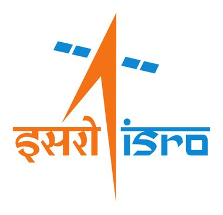
ISRO Chairmen and Chandrayaan-3 leadership have joined our student missions; the Foundation received an LVM-3 rocket model from ISRO.
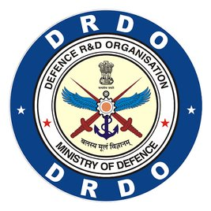
DRDO leadership, including its Chairman, has engaged with the Foundation on space and technology missions.
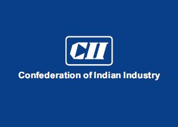
Partnered on the 1st Dr. APJ Abdul Kalam Memorial Lecture in New Delhi (2016).
Co-created the 2023 Satellite Launch Vehicle Mission with 5,000+ students.
Supported the 2023 student PICO-satellite mission.
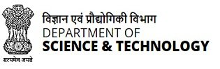
Engaged with Union leadership on the Foundation's science and space initiatives.
Joined the APJ Abdul Kalam Social Forest — 10,000 saplings planted in Rameswaram.
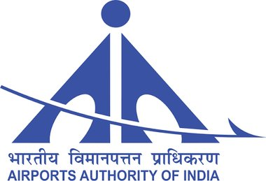
Collaborated with the Foundation on aviation and aerospace outreach for students.
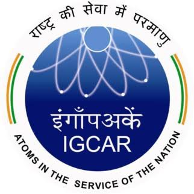
Engaged with the Foundation's science missions, continuing Dr. Kalam's Kalpakkam legacy.
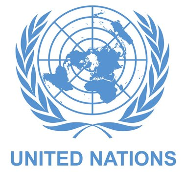
Presented the Foundation's mission at the UN, aligned with the Sustainable Development Goals.
// …alongside universities, schools, scientists and civic partners across India and abroad.
Honours
Dr. Kalam's legacy inspires national honours that celebrate science and innovation — and the Foundation felicitates outstanding young talent at its own events.
An annual national award recognising outstanding contributions to High-Performance Computing (HPC) in India, named in tribute to Dr. Kalam. Now in its eighth edition (2025), it honours researchers and institutions pushing the frontiers of supercomputing across science, engineering and industry — carrying Dr. Kalam's scientific spirit into India's digital future.
Read about the 2025 awardsAt the Foundation's own events — including the 2025 STEM / SPACE Conclave in Bahrain — outstanding teachers and students are honoured for excellence and innovation, in keeping with Dr. Kalam's belief in recognising and igniting young achievers.
// The Dr. APJ Abdul Kalam HPC Awards are a programme of Hewlett Packard Enterprise, named in Dr. Kalam's honour. Confirm the Foundation's exact role before presenting them as jointly run.
Moments
Snapshots from a decade of igniting young minds — from Rameswaram classrooms to the world stage.
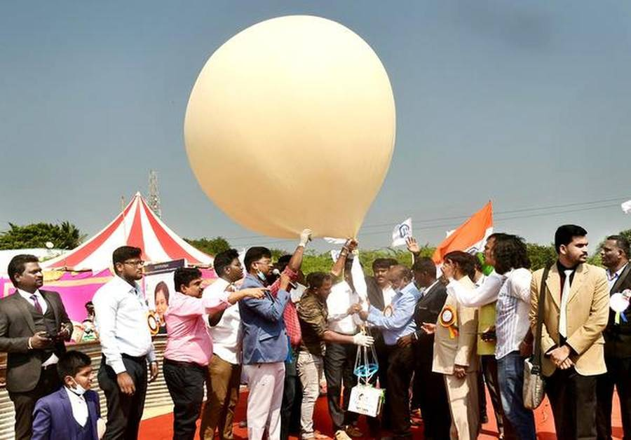
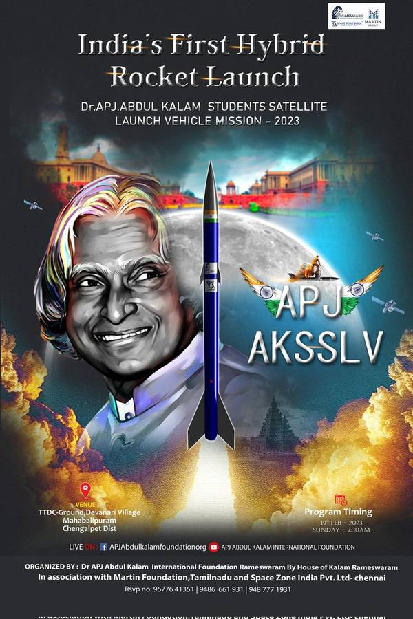
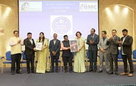
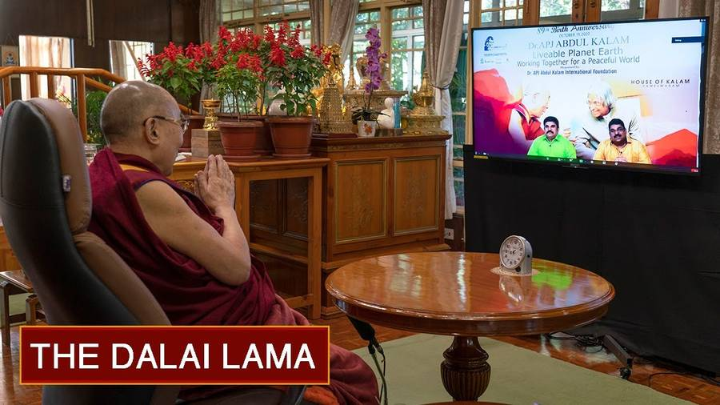
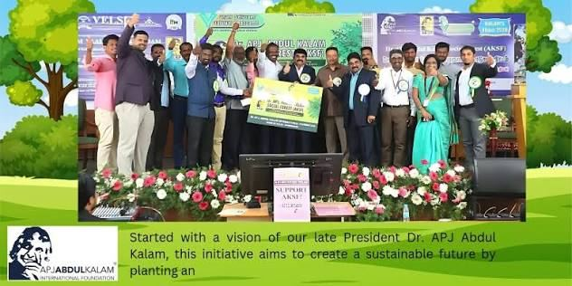
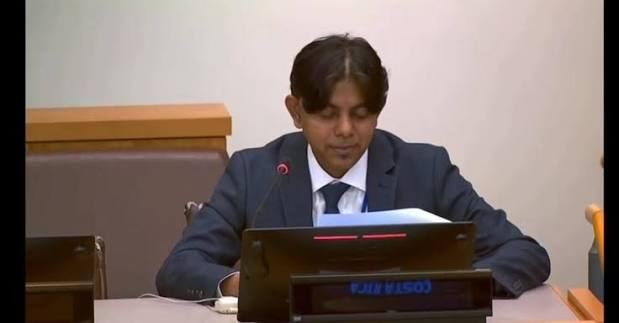
In the press
Selected coverage of the Foundation's missions and milestones. Each links to the original report.
The Foundation presented its work on peace, youth and sustainable development at the UN, pledging to align with the Sustainable Development Goals.
Speaking in Rameswaram on Dr. Kalam's 92nd birth anniversary, the ISRO chairman told students that India can build the world's best rockets.
The APJ Abdul Kalam Satellite Launch Vehicle Mission launched 150 PICO satellites built by more than 5,000 students from Chengalpattu, Tamil Nadu.
Reuters covers the Foundation's student space mission and its first hybrid rocket launch from Tamil Nadu.
With Space Zone India and the Martin Group, the Foundation set a world record from Rameswaram; the Prime Minister sent a congratulatory message.
// Add your latest coverage by copying a card above and updating the date, outlet, headline and link.
Our people
Leadership
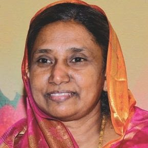
Of Dr. Kalam's family, guiding the Foundation's work from the House of Kalam.
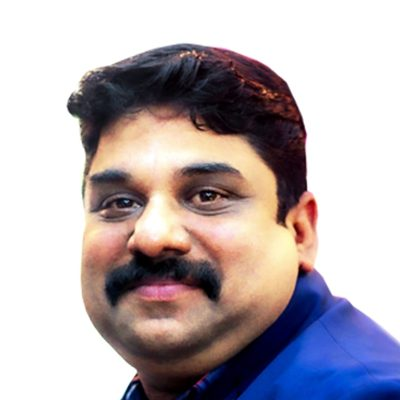
Grand-nephew of Dr. Kalam, carrying his legacy forward at the House of Kalam.
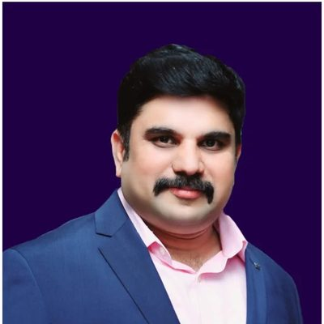
Grand-nephew of Dr. Kalam; worked with him in New Delhi on Vision 2020 and PURA.
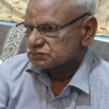
Of Dr. Kalam's family, anchoring the Foundation's administration and outreach.
Advisors & mentors
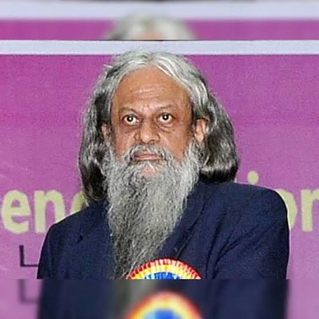
Padma Shri space scientist and co-author of “India 2020” with Dr. Kalam.
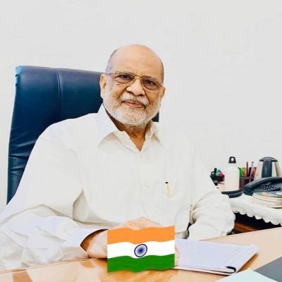
Renowned soil biologist and vermiculture pioneer advancing green, sustainable practices.
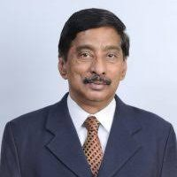
Eminent scientist of IISc Bangalore; jury chair of the Foundation’s innovation awards.
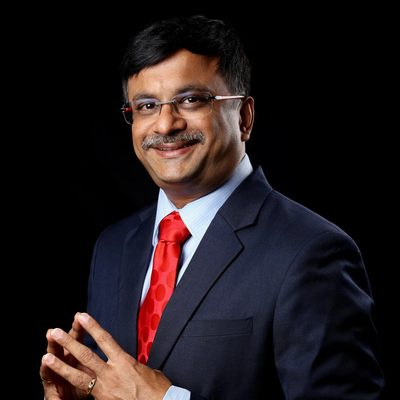
Technologist and Tamil-computing pioneer, guiding the Foundation's education and innovation programmes.
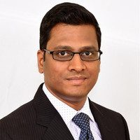
Entrepreneur and investor mentoring youth on employable skills and enterprise.
Join us
Our internship programme gives students and early-career graduates a chance to build real, career-ready skills while contributing to Dr. Kalam's mission of empowering young India.
You'll work on live projects, apply what you learn beyond the classroom, and earn a credential that helps your résumé stand out — with hours and remote options that fit around your studies.
Quick answers
The Dr. A.P.J. Abdul Kalam International Foundation is a registered public charitable trust based at the House of Kalam in Rameswaram, Tamil Nadu. It carries forward the vision of Bharat Ratna Dr. A.P.J. Abdul Kalam, India's eleventh President, through STEM and space education, environmental work, skilling and peace programmes for young people, with a focus on government schools and underserved communities.
The foundation was established on 11 October 2015 at the House of Kalam in Rameswaram, Tamil Nadu, by the family and close colleagues of Dr. A.P.J. Abdul Kalam.
The foundation is led by Chairperson Dr. A.P.J.M. Nazima Maraikayar, Co-Founders and Trustees APJMJ Sheik Dawood and APJMJ Sheik Saleem (grand-nephews of Dr. Kalam), and Secretary APJM Jainullabudeen. Its advisors include Y.S. Rajan, Prof. Sulthan Ahmed Ismail, Prof. N. Balakrishnan, Venkatarangan Thirumalai and Sasikumar Gendam.
Its main programmes are student space missions (the 2021 Student CubeSat Challenge and the 2023 Satellite Launch Vehicle Mission), the APJ Abdul Kalam Social Forest tree-plantation movement, Centres for Igniting Young Minds (STEM hubs in schools), career skilling in IT, AI and Data Science, Dr. Kalam Student's Home Libraries, and a planned Dr. APJ Abdul Kalam International School at Rameswaram.
In February 2021, around 1,500 students designed and launched 100 femto-satellites on a single high-altitude balloon from Rameswaram, organised by the foundation with Space Zone India and the Martin Group. It was recorded as a world first, and the Prime Minister sent a congratulatory message.
On 19 February 2023, the foundation's student mission launched 150 PICO satellites, built by more than 5,000 students including 2,000 from over 100 government schools, on India's first student hybrid rocket from Chengalpattu district, Tamil Nadu. It was organised with Space Zone India and the Martin Foundation.
The APJ Abdul Kalam Social Forest is the foundation's tree-plantation movement with a goal of one crore (10 million) trees. 10,000 saplings have already been planted at Olakkuda village, Rameswaram, together with the Tamil Nadu Coastal Security Group.
Yes. The foundation works as a CSR implementing partner for programmes eligible under Schedule VII of the Companies Act, 2013, including education and skills, environmental sustainability, rural development and reducing inequalities. It shares its 12A, 80G and CSR-1 credentials, audited accounts and a tailored proposal on request. Contact partnerships@apjabdulkalamfoundation.org.
The foundation presented its mission of peace, youth empowerment and sustainable development at the United Nations in New York in 2026, held its first overseas STEM / SPACE Conclave in the Kingdom of Bahrain in 2025, and hosted His Holiness the 14th Dalai Lama at a 2020 peace conference live-streamed in more than 14 languages.
Students and early-career graduates can join the foundation's remote-friendly internship programme in content writing, social media, operations, human resources, event and programme support, or community outreach. Interns work on live projects, receive mentorship and earn a certificate of completion.
Write to info@apjabdulkalamfoundation.org for general enquiries or partnerships@apjabdulkalamfoundation.org for CSR partnerships. The foundation's address is House of Kalam, Rameswaram – 623 526, Ramanathapuram District, Tamil Nadu, India.
Get in touch
Explore a CSR partnership, volunteer your teams, or fund a programme. Our partnerships team will respond with a tailored proposal.
We share our profile, 12A / 80G / CSR-1 credentials, audited accounts and a tailored proposal on request — with project-wise reporting and utilisation certificates built in.